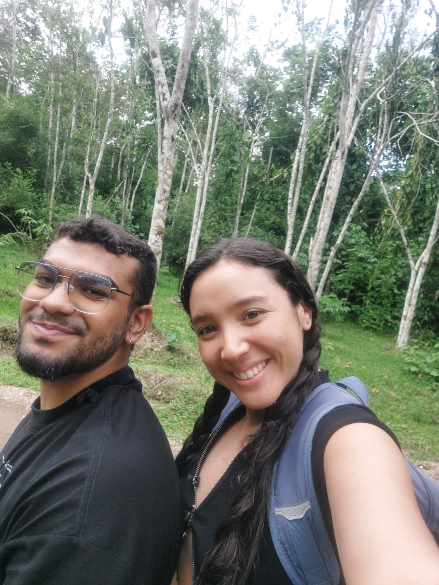
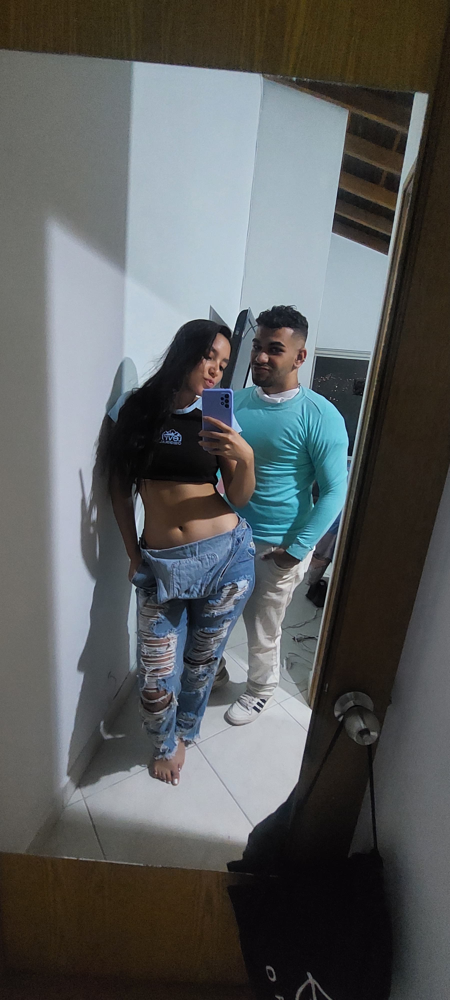
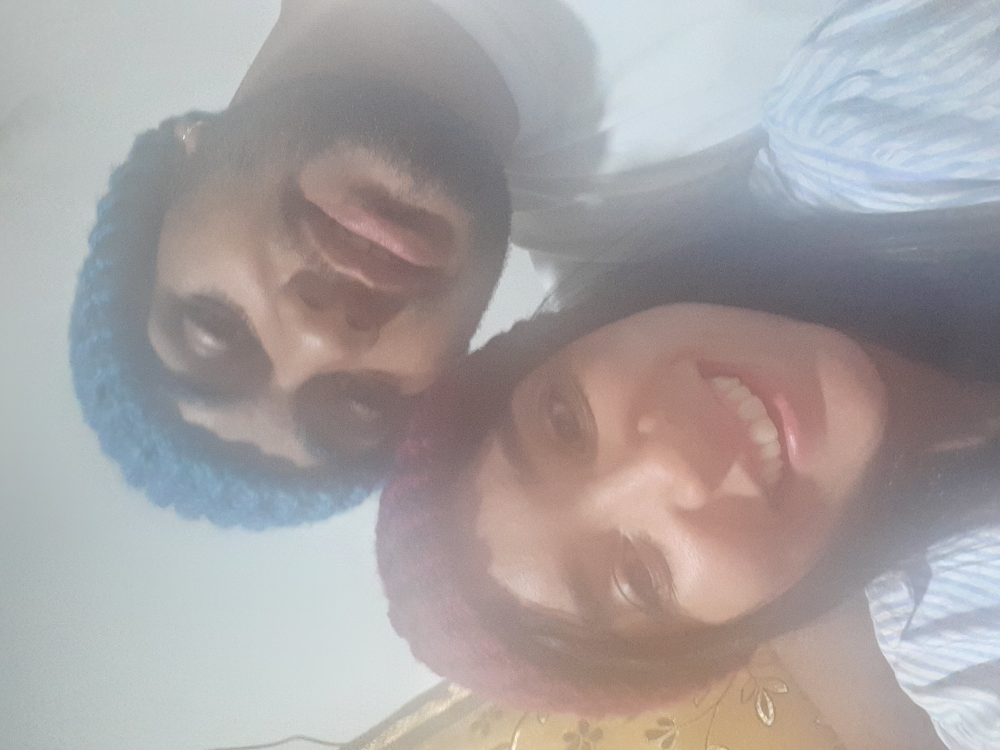
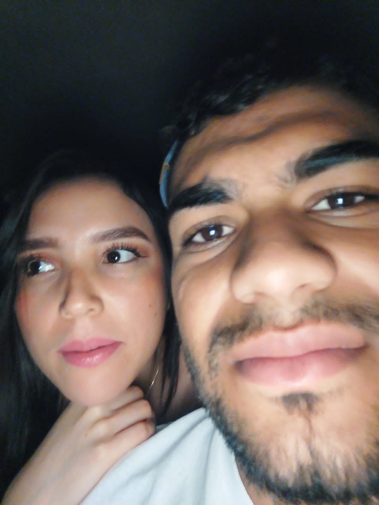

Para empezar, quiero decirte que esta es la primera página web funcional que hice. Tenme paciencia :D
Para que sepas que mi todo lo que he aprendido, lo quiero emplear para demostrarte cuanto te amo, mi papiroflexia.
Este es un espacio especial donde quiero guardar algunos momentos lindos que hemos compartido.
Entiendo que nuestra historia no será eterna, pero me asegurá que mantengas esta página web.
Para que me recuerdes, recuerdes que te amo, y que siempre esperaré por ti.
En esta galería pondré las fotos más hermosas de ti en tu cumpleaños. Anque no sé si la termine de aqui a la siguiente semana.
   Te amo muchísimo 💖
Bueno, este último mensaje lo acabo de agregar hoy 22/11/24. Sin ti, no tengo sosiego la verdad. Eres una de las razones más importantes para despertarme todos los días. Te debo una disculpa.
Lo que te dije al principio de esta semana, fuera de que en verdad me siento triste de no ser el hombre al que de verdad puedas querer en tu vida, en verdad siento habernos conocido fue la mejor experiencia de mi vida. Si no nos hubieramos conocido, yo no dependería tanto en una persona, sería alguien bastante más independiente y reservado sentimentalmente, osado, arrogante, y sería poco sensible. Si no nos hubieramos conocido, no habría podido influir en que te dieras cuenta en el valor que eres como persona y no como trofeo, podrías haber viajado mucho más, haber conocido y haber formado algún vínculo con alguien que te haya llenado completamente
Pero no. llegaste a mi vida, y me la volviste patas arriba, Te plantaste, me cambiaste y me hiciste mejor persona, más conciente, más sensible, más atento, me hiciste sentir bien. Creo que eso es lo que me duele más, la diferencia de sentir. Que yo te haya sentido como lo más valioso, y quien cambió mi mentalidad sobre una pareja. Pero que al mismo tiempo nunca sintió que fueramos una pareja, que todo lo que haciamos y por lo que pasamos, para decir "NO, es que todo lo que hemos hecho y como nos hemos tratado fue de amigos"
Me pesa, me arde y me duele, no haber hecho las cosas diferente. Me pesa no haber tomado las mejores decisiones, para que me vieras como alguien de quien te hubisies querido enamorar. Con quien quisieses dejar todo lo que digan y piensen atrás, alguien del que dijeras, Jueputa es mi novio, sin esconderlo ni nada. Aunque de igual modo, sé que lo que pasa no es algo que hubiera podido controlar en mucho sentido. No puedo controlar lo reservada que eres en ese sentido, tu mentalidad y ganas de libertad, que al ser novios la podrías ver limitada, la poca conciencia al detalle que tengo, lo poco experimentado que soy en el amor, y lo infantil o joven por así decirlo, por el mero hecho de llevar capitlos diferentes de nuestra vida. Sé que las cosas no son lo mismo, nos sentimos decepcionados el uno con el otro en cierto sentido. Pero no te agobies, busca tu felicidad individual. Ama y sé libre.
Te quiero decir que te amo. Amo todo de ti, y amaré más que busques también tu felicidad individual. Que viajes, experimentes, vivas y hagas plata. Yo te prometo hacer también ese mismo intento, intentaré superarme como persona, viajar y trabajar por un mejor futuro, a ver la vida con otra persectiva.
Nunca cambies tu escencia. Recuerda que a tus 25 años, ya conociste al amor de tu vida. Yo conocí al mío a los 21 años.